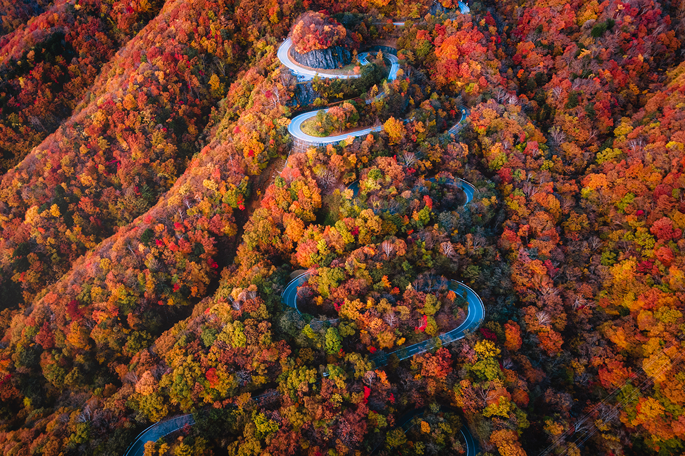

Префектура Тотиги · Никко · дорога
Ироха-дзака: 48 крутых поворотов по пути к озеру Тюдзэндзи

Япония умещает в себе всё, от субарктики до субтропиков, и среди её дорог есть такие, по которым стоит проехать хотя бы раз в жизни. К ним относится и Ироха-дзака в префектуре Тотиги, горный серпантин между городом Никко и озером Тюдзэндзи.
Дорога
Сорок восемь поворотов
Ироха-дзака поднимается от городских кварталов Никко к озеру Тюдзэндзи, и её узнают по 48 крутым поворотам. Дорог на самом деле две: по Второй Ироха-дзака (6,5 км) едут вверх, по Первой (9,5 км) спускаются обратно.
На подъёме стоит остановиться на смотровой площадке Акэтидайра. С неё открывается вся панорама сразу: гора Нантай, водопад Кэгон и озеро Тюдзэндзи. Канатная дорога Акэтидайра закрыта на обновление с 16 января 2026 года, открыть её снова собираются в сентябре 2027 года.
Сезон
Листва от поворота к повороту
Лучшее время для поездки приходится на осень, с середины октября до начала ноября. Клёны и буки вспыхивают красным и жёлтым, и поскольку с каждым поворотом дорога поднимается выше, цвет листвы меняется постепенно, как на растяжке. Глаз от этого не оторвать.
В разгар сезона на серпантине часто бывают пробки, поэтому выезжать лучше рано утром.
Рядом
Что попробовать и куда заехать
Из местной еды советуют гречневую лапшу соба Никко, юбу (тонкие пенки соевого молока) и химэмасу, озёрную форму нерки. По пути стоит подняться на канатной дороге Акэтидайра (когда она снова заработает), а наверху дороги заглянуть к озеру Тюдзэндзи, водопаду Кэгон и храму Тюдзэн-дзи, который также называют Татики Каннон.
Ироха-дзака
- Даты
- круглый год, круглосуточно
- Цены / Вход
- бесплатно
- Как добраться
- около 35 минут на машине от развязки Киётаки дороги Никко-Уцуномия
- Телефон
- +81 288-55-0880 (музей естествознания префектуры Тотиги в Никко)
- Сайт
- nikko-nsm.co.jp